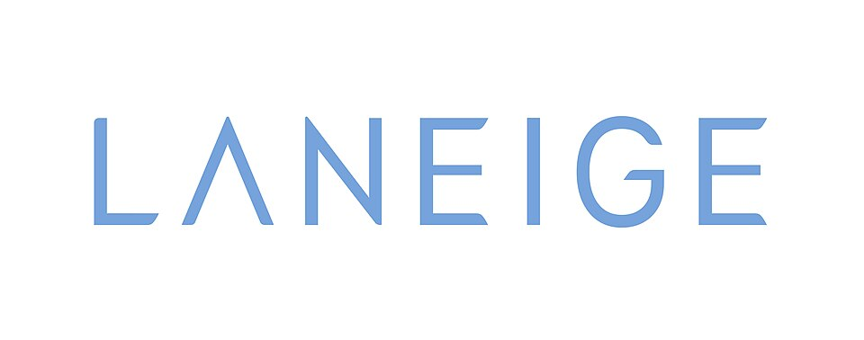

대표 로고대표 브랜드 마크
대표 로고대표 브랜드 마크홈 > 브랜드 매거진 > 아모레퍼시픽
아모레퍼시픽
아모레퍼시픽(Amorepacific)은 1945년 서성환이 태평양화학공업사로 창업한 한국의 대표 뷰티 기업으로, 2002년 현 사명을 채택했다. 설화수·라네즈·이니스프리·에뛰드·마몽드 등 다수 브랜드를 보유한다.
산업 분야 뷰티·퍼스널케어 · 공개 등급 자료 기반 · 브랜드 평가 4.7 ★
한눈에 보는 브랜드
브랜드 관점
시작과 성장
1945년 태평양화학공업사로 창립했다(모태는 동백기름 가내수공업 창성상점). 1948년 메로디 크림, 1951년 ABC포마드로 성장의 발판을 놓았고, 현재의 법인은 2006년 옛 태평양에서 인적분할되어 출범했다.
브랜드 아이덴티티
아모레퍼시픽은 한국적 헤리티지와 혁신을 결합한 뷰티 기업으로 자리매김해 왔다. 1966년에는 세계 최초의 한방 화장품으로 꼽히는 ABC인삼크림을, 2008년에는 세계 최초의 쿠션 파운데이션(에어쿠션)을 선보였다.
플래그십 럭셔리 브랜드 설화수는 '시간의 흐름에 지지 않는 아름다움'을 콘셉트로 한국 인삼 헤리티지를 현대적으로 해석하며, 라네즈는 프리미엄 스킨케어, 이니스프리는 자연주의 데일리 뷰티로 포지셔닝된다.
제품과 서비스
사람들
현재 상태
타임라인
정리된 연도형 이벤트가 없습니다.
BI/CI 변천사
대표 로고대표 브랜드 마크함께 읽을 브랜드
 뷰티·퍼스널케어 · 자료 기반설화수
뷰티·퍼스널케어 · 자료 기반설화수설화수(Sulwhasoo)는 아모레퍼시픽이 1997년 론칭한 대한민국의 한방 럭셔리 스킨케어 브랜드다. 한방 원료와 프리미엄 포지셔닝으로 아모레퍼시픽을 대표하는 럭셔...
 뷰티·퍼스널케어 · 자료 기반이니스프리
뷰티·퍼스널케어 · 자료 기반이니스프리이니스프리(Innisfree)는 아모레퍼시픽이 2000년 론칭한 대한민국의 자연주의 뷰티 브랜드다. 제주 원료를 내세운 스킨케어·색조로 아모레퍼시픽 자연주의 1호 브...
 뷰티·퍼스널케어 · 자료 기반코스알엑스
뷰티·퍼스널케어 · 자료 기반코스알엑스코스알엑스(COSRX)는 2013년 설립된 한국의 민감성 피부용 스킨케어 브랜드로, 현재 아모레퍼시픽 자회사다.
 뷰티·퍼스널케어 · 자료 기반마몽드
뷰티·퍼스널케어 · 자료 기반마몽드마몽드(Mamonde)는 꽃을 콘셉트로 한 아모레퍼시픽의 화장품 브랜드로, 1991년 출시됐다.
 뷰티·퍼스널케어 · 자료 기반헤라
뷰티·퍼스널케어 · 자료 기반헤라헤라(HERA)는 아모레퍼시픽의 프리미엄 화장품 브랜드로, 1995년 론칭했다.

뷰티·퍼스널케어 · 자료 기반라네즈라네즈(Laneige)는 아모레퍼시픽이 1994년 론칭한 대한민국의 수분 케어 중심 뷰티 브랜드다. 워터뱅크·슬리핑 마스크 등 수분 라인과 BB쿠션으로 알려졌다.
 뷰티·퍼스널케어 · 자료 기반에뛰드
뷰티·퍼스널케어 · 자료 기반에뛰드에뛰드(ETUDE)는 아모레퍼시픽그룹 계열의 색조 메이크업 중심 화장품 브랜드다.
 뷰티·퍼스널케어 · 자료 기반LG생활건강
뷰티·퍼스널케어 · 자료 기반LG생활건강LG생활건강(LG H&H Co., Ltd.)은 화장품·생활용품·음료를 아우르는 한국 기업으로, 현 법인은 2001년 LG화학에서 분할 신설됐다.